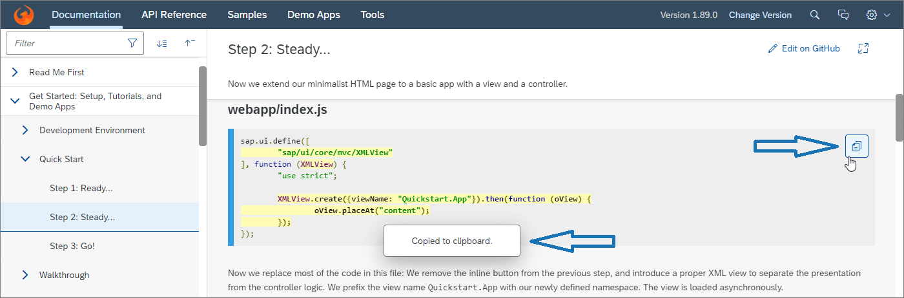

What's New in OpenUI5
1.89
What's New in OpenUI5
1.89
With
this release OpenUI5 is upgraded
from version 1.88 to 1.89.
Demo Kit Feedback
|
Demo Kit Improvements
Here are some Demo Kit improvements that we implemented based on
your feedback:
-
You can now quickly cancel the global search by pressing
Esc.
We implemented a copy button in all code samples in the
Documentation
section: We added a link for
each API in the Demo Kit and you can now go directly to
the source code file in GitHub:
|
Improved
Features
|
OpenUI5 OData V2 Model
You can now provide unit and currency customizing for the
sap.ui.model.odata.type.Unit and
sap.ui.model.odata.type.Currency data types
as part of the data service. For more information, see Currency and Unit Customizing in OData V2.
|
|
OpenUI5 OData V4 Model
Additional targets are now supported for server
messages.
|
|
OpenUI5 Data
Types
The preserveDecimals format option introduced in
sap.ui.core.format.NumberFormat with OpenUI5 1.87 is now enabled by default, unless the
style format option is set to either
short or long. This
applies to the following data types:
sap.ui.model.type.Currencysap.ui.model.type.Floatsap.ui.model.type.Unitsap.ui.model.odata.type.Currencysap.ui.model.odata.type.Decimalsap.ui.model.odata.type.Doublesap.ui.model.odata.type.Singlesap.ui.model.odata.type.Unit
This change fixes the shortcoming that displayed values can be truncated if the back end
provides more decimals than accounted for on the UI. It is also
a prerequisite for highlighting all instances of invalid data
entered by the user if the same property is displayed in
multiple places on the UI.
However, in some cases it can be necessary to display a value
with fewer decimals than actually exist for the property. You
would then need to add the preserveDecimals
format option with a value of false to the type
instance.
|
Improved
Controls
|
sap.m.Link,
sap.m.ObjectIdentifier,
sap.m.ObjectNumber,
sap.m.ObjectStatus, and
sap.ui.unified.Currency
Similar to the sap.m.Text control, these
controls now also implement the new
emptyIndicatorMode property. It allows
developers to display an empty text as a language dependent “-”
symbol.
|
|
sap.ui.layout.form.Form,
sap.ui.layout.form.SimpleForm
You can now define up to six columns in extra-large size in a
form. For more information, see the API Reference,
the Samples for
Form, and the Samples for
SimpleForm.
|